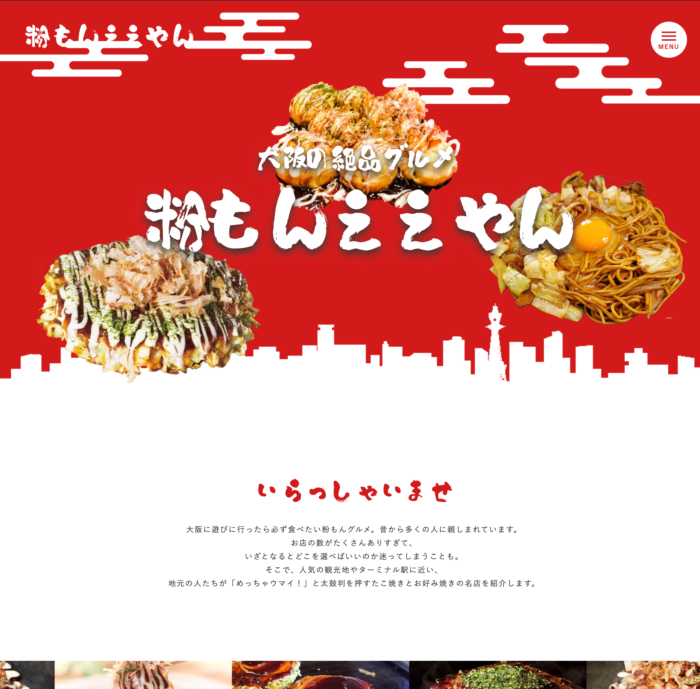

粉もんええやん

- 制作期間
- 5日(2022年3月)
- 人数
- 1人
- 担当
- 全て (企画、デザイン、コーディング)
- 使用技術
- HTML, CSS(SCSS), JavaScript(jQuery), WordPress, Git(Sourcetree)
- 作品概要
- お好み焼きやたこ焼き等の粉もんを中心とした大阪のグルメ紹介サイトです。ターゲットは他の都道府県から大阪に転勤にきた家族です。大阪の６割以上の人が月に２回以上の高い頻度で鉄板系粉ものを食べられていることから、他県の人に大阪の庶民的な味を堪能して大阪に興味を持ってもらいたいと思い制作しました。
- こだわり
- 大阪市浪速区にある新世界を意識した賑やかなサイトデザインにしました。大阪の雰囲気を楽しんでもらうためにお好み焼きやたこ焼きをくるくる回転させてアニメーションさせました。